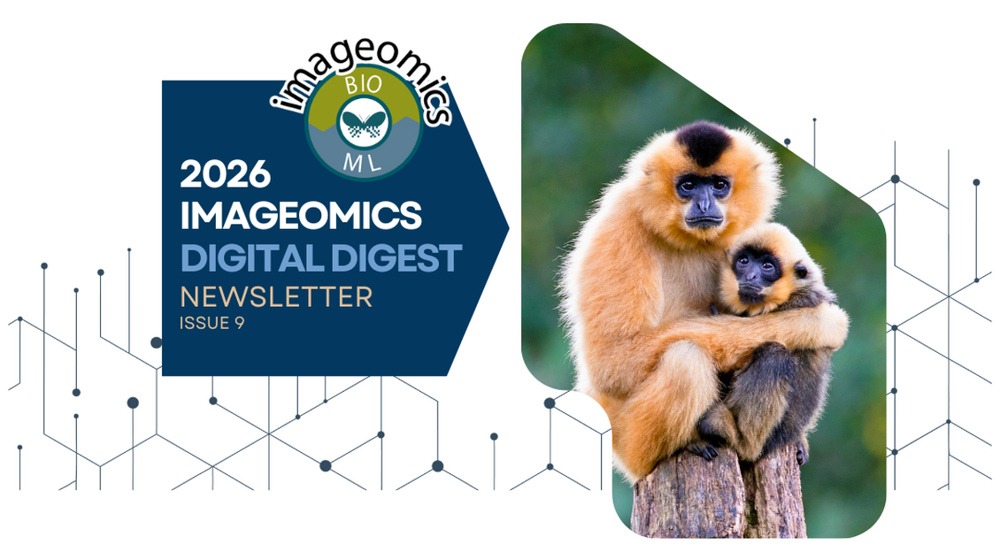

The 9th edition of the Imageomics Institute's Digital Digest is now out!
This edition highlights key moments from the Imageomics community, including the success of the Imageomics Conference, which brought together researchers, students, and innovators for hands-on workshops, tool demonstrations, and collaborative discussions at the intersection of biology and AI.
This issue also celebrates recent awards and recognitions across the community, highlighting the impact of ongoing work in imageomics. Together, these milestones reflect the continued growth, collaboration, and innovation of the Imageomics community.
Read the full issue by clicking the photo above.